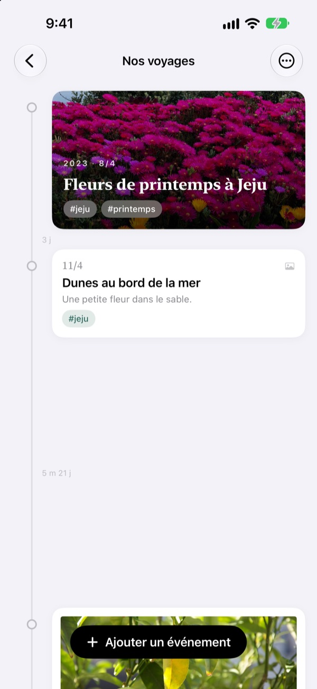
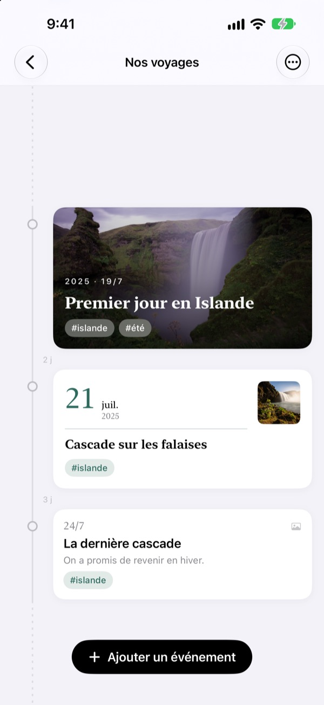
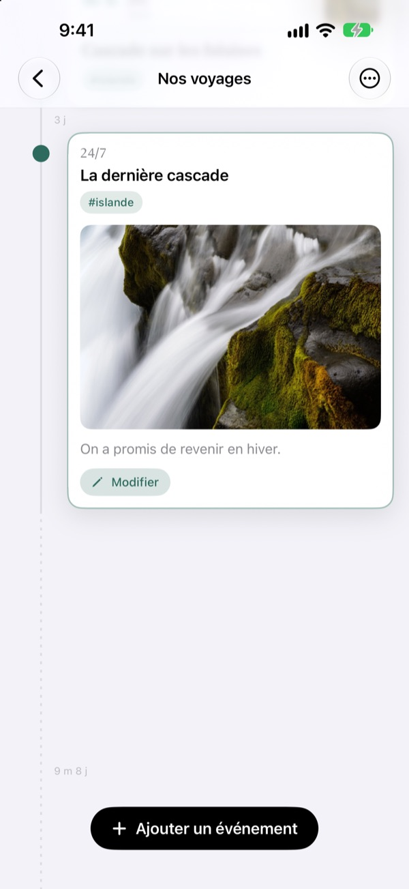
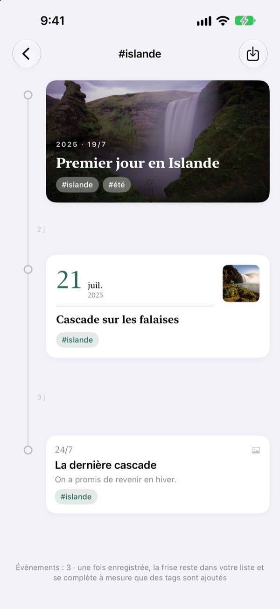
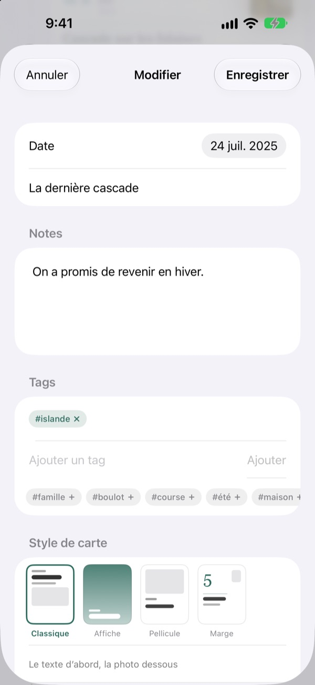

Une frise qui s'étire
avec le temps
Trois jours et cinq jours s'écartent de 3 à 5. Une longue pause, comme deux ans et quatre mois, se replie en pointillés. Rien qu'à l'espacement, vous voyez comment le temps a passé.
Toutes les fonctions sont gratuites. Pour iPhone et iPad.

Écartez le temps vous-même
Chaque bouton ajoute un événement après le dernier. L'espacement suit la même règle que dans l'app.
Votre photothèque ne montre pas le temps
La photothèque aligne tout par date, mais trois jours et deux ans n'y occupent qu'un seul cran. Yeoul espace les événements selon le temps écoulé entre eux : vous voyez d'un coup d'œil les périodes chargées et les périodes calmes.
L'écart, c'est le temps
Une seule échelle pour toute la frise : une même durée a la même longueur partout à l'écran. Chaque écart porte sa durée réelle, comme 3 j ou 5 m 21 j.
Les événements très proches gardent un peu d'air, et les très longues pauses se replient en pointillés.

Les photos du jour, retrouvées pour vous
Fixez la date et touchez Trouver des photos associées pour voir celles prises ce jour-là. Rien ne convient ? Chercher moi-même vous laisse choisir.
Touchez un événement sur la frise : sa photo et son texte s'ouvrent sur place.

Un tag rassemble les moments épars
Ajoutez un tag comme #Islande, touchez-le, et tous les événements qui le portent, toutes frises confondues, se réunissent dans une nouvelle.
Enregistrez-la : elle reste dans votre liste et accueille d'elle-même les nouveaux événements tagués.

Une carte qui va à chaque moment
Classique met le texte en avant, Affiche remplit la carte de la photo, Pellicule l'encadre comme un tirage, Marge laisse une grande date occuper la scène. L'aperçu change dès que vous choisissez.

Trois étapes pour commencer
- 1
Créez une frise
La première année d'un enfant, une histoire d'amour, un voyage : un nom et une couleur pour chacune.
- 2
Ajoutez des événements
Une date, un titre, et une photo de ce jour-là.
- 3
Taguez-les
Les événements au même tag se rejoignent, d'une frise à l'autre.
Quatre designs de carte
- Classique
- Le texte d'abord, la photo en dessous.
- Affiche
- La photo remplit la carte, un grand titre par-dessus. Sans photo, la couleur de la frise prend le relais.
- Pellicule
- Une photo bordée comme un tirage, avec texte façon machine à écrire et tampon de date.
- Marge
- Un grand chiffre de date, une petite photo. Ici, les mots sont la vedette.
Un nouvel événement reprend le design de la carte la plus récente de sa frise.
Toutes les fonctions sont gratuites
Gratuit
- Autant de frises que vous voulez, avec nom et couleur
- Photos, textes et tags pour chaque événement
- Retrouver les photos du jour de l'événement
- Frises par tag enregistrées
- Quatre designs de carte
- Synchronisation iCloud entre iPhone et iPad
- Enregistrer avec Raccourcis et Siri
Soutenir le développeur
- Un petit, moyen ou grand pourboire, au choix
- Cela ne débloque rien. C'est simplement une façon de dire merci
Dans les réglages de l'app, quand l'envie vous en prend.
Pas de pub, pas d'abonnement.
Questions fréquentes
Pourquoi les écarts entre événements sont-ils tous différents ?
Yeoul espace les événements selon le temps réellement écoulé. Tous les écarts suivent la même échelle, donc trois jours et cinq jours s'écartent de 3 à 5. Les événements très proches gardent un écart minimal pour ne pas se chevaucher, et les très longues pauses se replient en pointillés avec leur vraie durée, par exemple 2 a 4 m.
Je ne vois pas les photos de ce jour-là.
La recherche par date demande l'accès à vos photos. Autorisez-le dans Réglages > Yeoul > Photos. Yeoul cherche les photos prises de minuit à minuit ce jour-là, dans le fuseau horaire de l'appareil. Si vous préférez ne pas donner l'accès, touchez Chercher moi-même juste en dessous.
Qu'est-ce qu'une frise par tag ?
Touchez un tag sur un événement : Yeoul réunit tous les événements qui le portent, toutes frises confondues, dans une seule. Gardez celles que vous consultez souvent dans votre liste. Rien n'est copié : modifiez l'événement d'origine et la frise suit, et supprimer une frise par tag laisse les événements intacts.
Pourquoi ne puis-je pas ajouter d'événement dans une frise par tag ?
Une frise par tag est une vue rassemblée par tag, pas un contenant : impossible de savoir à quelle frise appartiendrait le nouvel événement. Ajoutez-le dans sa propre frise avec le tag, et il apparaîtra ici tout seul.
Puis-je noter un événement sans ouvrir l'app ?
Oui. Utilisez Enregistrer un événement dans l'app Raccourcis ou avec Siri, puis choisissez simplement une frise et un titre. Sans date, l'heure actuelle est utilisée.
Mes frises sont-elles visibles sur mes autres appareils ?
Oui, sur tout iPhone ou iPad connecté à iCloud avec le même compte Apple. Vérifiez dans Réglages > votre nom > iCloud qu'iCloud est activé. Selon la connexion, la synchronisation peut prendre un instant.
Comment supprimer mes données ?
Balayez une frise vers la gauche dans la liste, ou touchez Modifier. Supprimer une frise supprime aussi ses événements. Pour effacer ce qui reste dans iCloud, passez par la gestion du stockage dans les réglages iCloud.
Le développeur voit-il mes données ?
Non. Vos événements et photos restent sur vos appareils et dans votre propre iCloud, le développeur n'y a pas accès. Tous les détails sont dans la politique de confidentialité ci-dessous.
Comment signaler un bug ou proposer une idée ?
Directement depuis les réglages de l'app, par e-mail, ou sur Instagram à @lee25_ios. Indiquer le modèle de l'appareil, la version d'iOS et ce qui s'est passé nous aide à répondre plus vite.
Une question, une idée ? Écrivez à leeo@kakao.com.